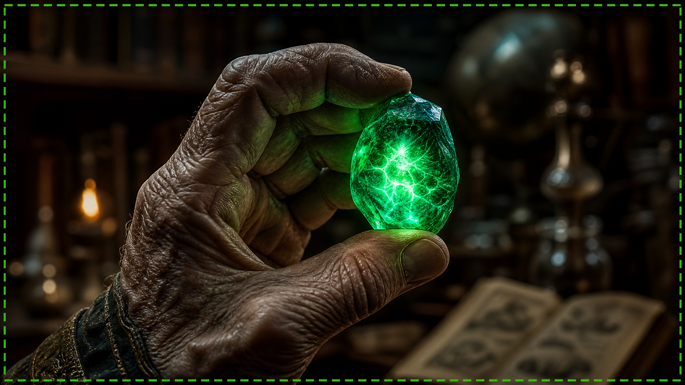

Už Vás Unavuje Neustála Kontrola Cukru v Krvi? Existuje Riešenie, Ktoré Pred Vami Tajili!
Roky Vám hovorili, že musíte prijať svoj stav, kontrolovať každé jedlo a žiť v neustálom strachu z kolísania hladiny cukru. Ale čo ak Vám poviem, že existuje **starodávny, prírodný mechanizmus**, ktorý slovenskí vedci znovu objavili a ktorý môže pomôcť Vášmu telu znovu získať stratenú rovnováhu? Tajomstvo, ktoré moderná medicína ignorovala po desaťročia, je teraz konečne dostupné.
Predstavte si, že sa každé ráno prebúdzate plní energie, bez duševnej hmly, a môžete si slobodne vychutnávať svoje obľúbené jedlá bez pocitu viny. Toto nie je nedosiahnuteľný sen, ale konkrétna možnosť pre tisíce ľudí, ktorí už túto metódu objavili. Je čas prevziať kontrolu nad svojím životom a zdravím.

"Zlatá Tekutina", Ktorá Môže Revolucionalizovať Váš Metabolizmus
V centre tohto neuveriteľného objavu stojí prírodný prvok, skutočná "Zlatá Tekutina", ktorej existencia sa dedila po generácie. Toto nie je liek, nemá vedľajšie účinky a nevyžaduje vyčerpávajúce diéty. Táto esencia, ak sa správne používa, pôsobí priamo na bunky, reaktivuje ich schopnosť efektívne spracovávať cukor a zlepšuje citlivosť.
Nezávislé štúdie ukázali, že táto "Zlatá Tekutina" môže pomôcť stabilizovať hladinu cukru v krvi, znížiť inzulínovú rezistenciu a zlepšiť celkový zdravotný stav. Je to, akoby Vaše telo dostalo "impulz", aby opäť fungovalo tak, ako má, čo Vám umožní žiť plnohodnotnejší život bez obmedzení, ktoré Vám boli doteraz nanútené.
Nedovoľte, Aby Vám Hovorili, Že Neexistuje Nádej!
Ak Vás už unavujú prázdne sľuby a dočasné riešenia, ak chcete konečne vyriešiť koreň problému, a nielen symptómy, potom musíte poznať toto tajomstvo. Nedovoľte, aby Váš vek alebo stav určovali Váš život. Zaslúžite si žiť život plný vitality, energie a slobody, a užívať si každý jeho okamih.
Toto je Vaša šanca objaviť pravdu. Kliknite na tlačidlo nižšie a získajte prístup k exkluzívnemu videu, ktoré odhalí všetky detaily o tom, ako môže táto "Zlatá Tekutina" transformovať Vaše zdravie a vrátiť Vám slobodu, o ktorej ste si mysleli, že ste ju navždy stratili. Nečakajte, kým bude príliš neskoro!
KLIKNITE SEM A OBJAVTE TAJOMSTVO STABILNÉHO CUKRU A VIAC ENERGIE!